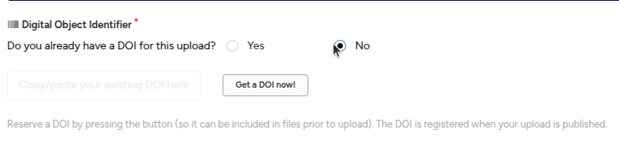
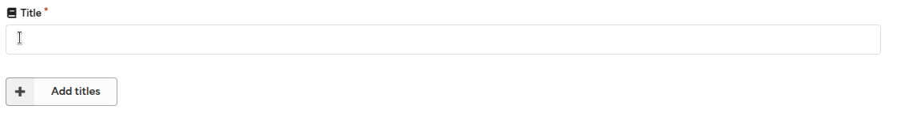
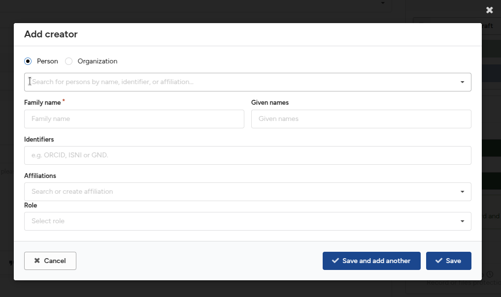
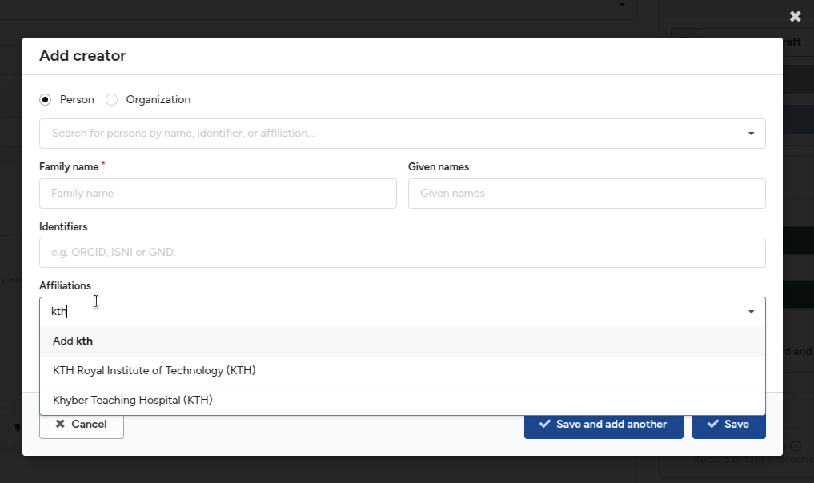
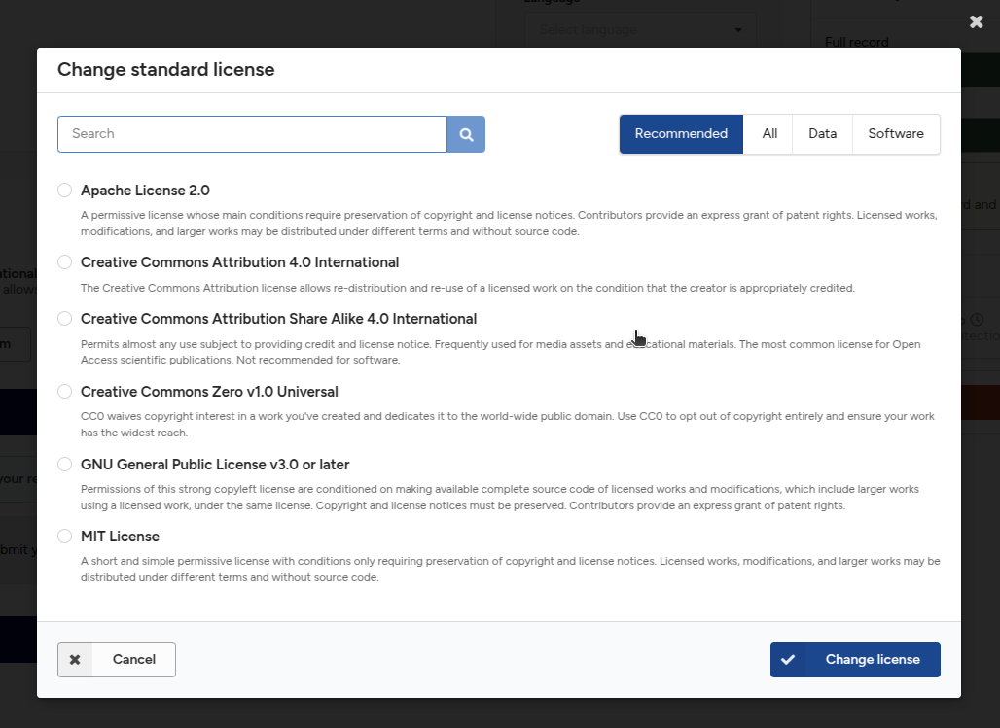
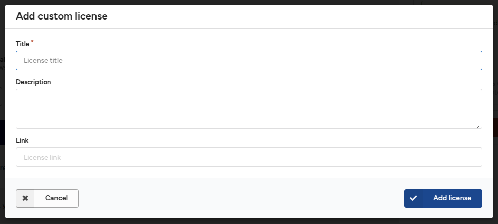

See the Create new upload for an overview of creating a new upload. This section provides a detailed description of each field available in the deposit form:
Contributors — Learn to add persons/organisations that do not appear in the citation.
Resource types
The resource type field is a required field in the deposit form. The resource type is used to describe the nature of the files being shared and is important for the discoverability of your record.
Resource types
Selecting a resource type
From the resource type field drop-down, select one of the resource types that best describes the files you are sharing.
The selected resource type is important for the discoverability of your upload, both for users to find your research output and because various discovery systems only index, for example, publications, datasets, or software from the KTH Data Repository.
Mixed resource types
You may find that you want to share a digital object that consists of, for example, both data and software, or any other combination of multiple resource types. In these cases, there are two possible solutions:
Choose one type – Select the resource type that you believe best describes and/or is most significant for the upload. For instance, the main contribution may be the dataset, while the software consists of a couple of processing scripts.
Split the upload – Divide the upload into multiple records, one per resource type. Choose this method when both, for example, the dataset and software are significant contributions in themselves.
Digital Object Identifier (DOI)
A Digital Object Identifier (DOI) is a globally unique persistent identifier for your record. The DOI is important because:
It provides a permanent link to your upload so readers can always reliably locate your content.
It is important for discovery systems to attribute citations correctly.
It enables reliable interlinking of research outputs.
It makes your research more discoverable by indexing the DOI metadata in a global registry.
By default, the KTH Data Repository registers DOIs for all uploads when they are published. If you need to know the DOI before publication, you can use the method below to reserve a DOI. The reserved DOI can then be included in files (e.g., a text document) before uploading them.
Reserve a DOI
In the Digital Object Identifier field, answer "No" to the question "Do you already have a DOI for this upload?"Already have a DOI
Click the Get a DOI now! button.

Get a new DOI
A DOI will now be reserved for you. You can include this DOI in files before uploading them (e.g., in a text document). You can also remove it by clicking the X button next to the DOI.
New DOI Generated
If you remove the reserved DOI, you can retrieve the same reserved DOI again by clicking the Get DOI button. However, if you delete the draft upload, the reserved DOI is lost.
Use an existing DOI
If you have already shared or uploaded your record to another repository or journal, you may already have a DOI. In this case, you must provide the existing DOI to prevent multiple DOIs being registered for the same content. Note that if you are sharing supplementary data for a journal article, you should not use the journal article DOI.
In the Digital Object Identifier field, answer "Yes" to the question "Do you already have a DOI for this upload?"Already have a DOI
Copy and paste (to avoid typos) the existing DOI into the field. The DOI will be validated for conformity, and a given DOI may only be deposited once in the KTH Data Repository (i.e., duplicate detection is in place).
Titles
The title field is a required field in the deposit form. The title is essential for readers to discover your research, and it is used in citations and when records are displayed anywhere in the repository.
You may optionally add additional titles, such as subtitles, translated titles, or alternative titles.
Add an additional title
Click the Add titles button.

Add title text input
2. Provide the additional title and select the title type (alternative title, subtitle, translated title, or other).
Add additional title
3. Optionally, set the language of the additional title.
Publication date
The publication date field is a required field. By default, it is set to the date the draft was created. If your upload was previously published elsewhere (e.g., as a journal article), please use the date of the first publication.
Note that in addition to the publication date, the KTH Data Repository keeps track of the date a record was uploaded to the repository.
Imprecise dates (EDTF)
For older content, you may not always know the precise publication date. In these cases, you can use both imprecise dates and date ranges following the Extended Date Time Format (EDTF) Level 1 standard:
Reduced precision for year and month – 2025-09 refers to the month of September 2025.
Reduced precision for year – 2025 refers to the calendar year 2025.
Time interval – 2025-01-01/2025-09-23 refers to the time interval beginning on January 1, 2025, and ending on September 23, 2025.
Time interval imprecise – 1939/1945 refers to the time interval beginning sometime in 1939 and ending sometime in 1945.
Creators
The creators field is a required field. Creators are the persons or organisations that have created the resource being uploaded (e.g., the authors in the case of papers). Creators are listed in the academic citation.
A creator can be either a:
Person
Organisation
See also contributors for how to add persons or organisations that should not appear in the academic citation.
Add a creator
Click Add creator to add one or more new creators.
Add creator button
Choose between Person or Organisation as the name type.
Person names are split into family/given name fields and can be auto-completed.
Organisation names consist of a single name field and cannot be auto-completed.

Add creator menu
Search for an already known person to speed up entry. The search is powered by the ORCID dataset.
Add creator autocomplete
Enter the family name and given names. The split is important for the automatic generation of citation strings.
Enter name identifiers for the person/organisation, such as ORCIDs, ISNIs, GNDs, or RORs. These will be automatically normalized by the form.
Enter one or more affiliations for the creator. The field is auto-completed from the ROR database.
Prefer selecting an auto-completed option as it uniquely identifies the organisation.
If your organisation is not listed, you may enter the name manually.

Add affiliation
Optionally, select a role for the creator (e.g., "Editor").
Click Save and add another to add more creators, or click Save to return to the main form.
Edit a creator
Click the Edit button next to a creator to update their information.
Edit creators
Remove a creator
Click the Remove button next to a creator to delete them from the list.
Remove creators
Reorder creators
Click and hold the drag-and-drop icon.
Drag the creator into the desired order in the list.
Reorder creators
Descriptions
The description field is a recommended field. It is typically used to provide an abstract of your record. Additionally, you can add other descriptions, such as methods, technical information, and notes.
Add a description
Enter an abstract for your record.
You may use basic formatting, including:
Paragraphs
Headings
Bold/italic text
Links
Bullet lists
Quotes
Add an additional description (e.g., notes, methods)
Click the Add description button to add an additional description.
Fill in the additional description.
You can remove the description by clicking the remove icon (X).
additional description menu
Choose a description type, and optionally, select the language of the description.
additional description types
Licenses and rights
The license field is a required field. Providing a license for your record is important to allow other users to reuse your upload. The KTH Data Repository defaults to the Creative Commons Attribution 4.0 International (CC-BY) license.
Licenses menu
Choosing a license
We recommend the following resources to help you choose an appropriate license:
Once you have chosen a license, follow the steps below to select it in the KTH Data Repository.
Change a standard license
Click the Edit button next to the Creative Commons Attribution 4.0 International (CC-BY) license.

Change Licenses menu
Choose one of the widely recommended licenses presented, or search/browse for a standard license.
The KTH Data Repository relies on the widely used SPDX list of licenses.
If you cannot find your license, you can add a custom license (see next section).
Add a custom license
If you cannot find a standard license, you can add a custom license.
Click the Add custom button.
Provide the title of the license, and optionally, add a description and a link to the license.

Custom license menu
Mixed license uploads
You may need to upload files that fall under different licenses (e.g., software under the MIT license, but documentation under the CC-BY license). In such cases, you can declare all the applicable licenses in the system.
Mixed licenses
Contributors
The contributors field is a recommended field. Use this field to provide information about persons or organisations that have contributed to the record, such as supervisors, contact persons, sponsors, etc. Contributors are not included in the academic citation.
Creators vs. Contributors
The main difference between creators and contributors is summarized in the table below:
Included in citation
Role required
Creators
Yes
No
Contributors
No
Yes
You should decide where to add a person or organisation based on whether they should appear in the academic citation.
Add a contributor
Click the Add contributor button to add one or more contributors.
Fill in the contributors' information, similar to creators (see Creators documentation).